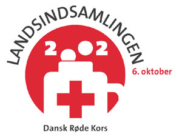

| Tid og sted | Begivenhed |
|---|---|
| 1. okt. 2002 kl. 19-22 Det digit@le værksted |
Hjemmesidekursus hold 2 |
| 3. okt. 2002 kl. 19-21 på Ullits skole |
Forældremøde for 4. klasse |
| 4. okt. 2002 Spejderne |
Combilejr 4.10.10 |
 |
|
| 7. okt. 2002 kl. 19-22 Det digit@le værksted |
Hjemmesidekursus hold 1 |
| 8. okt. 2002 Område L |
Storskrald |
| 8. okt. 2002 kl. 19-22 Det digit@le værksted |
Hjemmesidekursus hold 2 |
| 9. okt. 2002 Område M |
Storskrald | 10. okt. 2002 Område N |
Storskrald | 11. okt. 2002 Ullits Skole |
Skolernes motionsløb |
| 12. okt. 2002 Ullits Skole |
Efterårsferien begynder |
| 14. okt. 2002 kl.19.30 Svingelbjerg Beboerhus |
Bankospil |
| 21. okt. 2002 kl. 19-22 Det digit@le værksted |
Hjemmesidekursus hold 1 |
| 21. okt. 2002 Ullits skole |
Skolen begynder igen |
| 22. okt. 2002 kl. 19-22 Det digit@le værksted |
Hjemmesidekursus hold 2 |
| 22. okt. 2002 kl.19.15 på Ullits Skole |
Skolebestyrelsesmøde |
| 24. okt. 2002 kl.19.30 i Præstegården |
Sogneaften | 27. okt. 2002 kl.11 Badmintonklubben |
Hyggeturnering |
| 28. okt. 2002 kl. 19.30 Svingelbjerg Beboerforening |
Bankospil |
| 28. okt. 2002 kl. 19.15 på Ullits Skole |
Samtalemøde 2.klasse |
| 30.okt. 2002 kl. 19.30 Medborgerhuset |
Syng Dansk aften under medvirken af Tatiana Pedersen, Sus Danielsen, Ane Margrethe Jensen og Else Marie Drost. Arrangeret af Ullits Medborgerhus og menighedsrådene i Ullits, Foulum og Svingelbjerg sogne. |